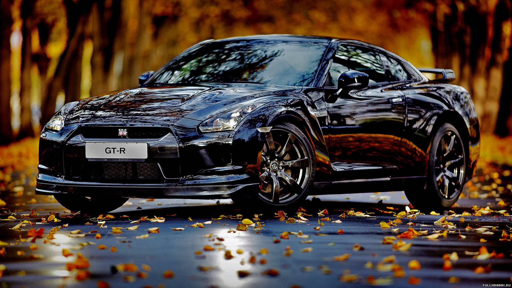

Mersedes начала продажи нового кроссовера Benz
01.01.2020
Mersedes начала продажи субкомпактного кроссовера Benz. Машина доступна только в Германии, и это первая модель Mersedes, которая будет продаваться исключительно онлайн, количество предзаказов уже превысило 30 тысяч.
Кроссовер разрабатывался специалистами пяти глобальных R&D-центров Mersedes. Дизайн Benz создавался в Калифорнии (США), а за интерьер отвечали в Барселоне (Испания). Окончательно проект согласовывали и собирали в единую машину в Шанхае.
Автомобиль действительно вышел интересным и неотстающим от многих европейских конкурентов. В салоне два дисплея: виртуальные приборы и мультимедиа. Многие элементы стилизованы под «петлю бесконечности». За безопасность отвечает набор электроники с 12 ультразвуковыми датчиками и пятью камерами. Icon оснащен активным круиз-контролем, автопарковщиком, системой поддержания полосы, автоматическим торможением и другими высокотехнологичными функциями.
Но самое интересное — система Air Purification System (IAPS). Работающая в паре с климатической установкой, IAPS «изолирует и уничтожает вредные элементы в салоне». Geely уверяет, что никакая вредная бактерия или вирус не попадет внутрь автомобиля.